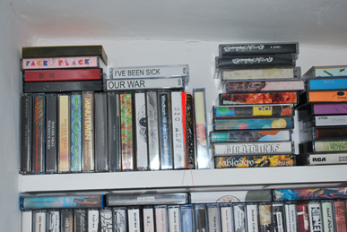
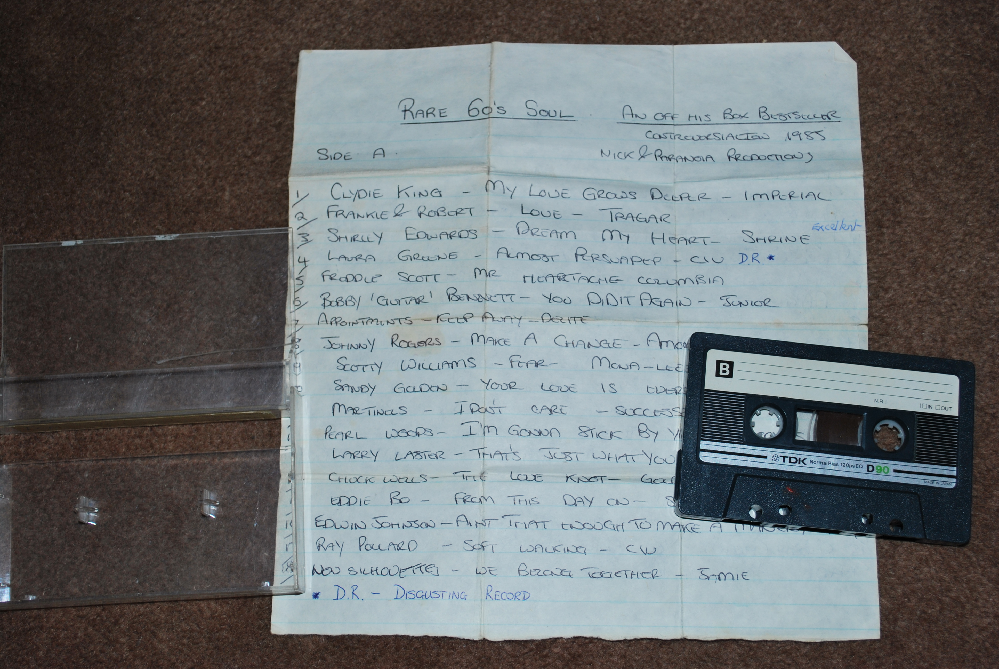

Information behaviour of music record collectors
Paul Margree, Andrew MacFarlane, Ludovica Price and Lyn Robinson
Centre for Information Science, City University London, Northampton Square, London EC1V 0HB
Introduction
If digital technology has made it possible for people to carry thousands of songs around in a tiny music player, why are some still attached to physical music recordings, many of which use an arguably obsolete and imperfect storage medium - the vinyl record? Why do people continue to maintain physical record and CD collections when one can accumulate much more music digitally on the hard drive of a personal computer that takes up a fraction of the space of a physical collection?
This paper takes the motivations for building and maintaining physical, predominantly vinyl, record collections as a starting point, in examining the information behaviour of record collectors. It explores how they find out about information related to their collections, and whether they build up specialist knowledge that is specific to record collecting. It examines which information resources they use to develop and maintain their collections, and whether the ubiquity of the Internet has changed their information behaviour.
By studying this group of hobbyists, we are able both to examine in detail the information behaviour of a specific group, being strongly influenced by changing technology, and also to add to understanding of the place of information in serious leisure.
Record collecting: serious leisure and everyday life information
Record collecting can be seen as an example of serious leisure, as first articulated by Stebbins (1982, 1992, 2001) and recently outlined by Elkington and Stebbins (2014). This concept proposes that, as a result of the changing nature of work and the relative affluence enjoyed by Western societies in the latter half of the 20th century, people from those societies have had both the income and the time to take up a range of leisure pursuits. For some people, serious leisure has replaced work as a means of enrichment and self-expression; although it occurs in a participant's free time, it takes on the appearance and characteristic of an occupation, or of employment. Stebbins describes it as:
the systematic pursuit of an amateur, hobbyist, or volunteer activity that is sufficiently substantial and interesting for the participant to find a career therein the acquisition and expression of its special skills and knowledge (Stebbins 1992, p3)
These 'special skills and knowledge' will clearly possess some information-related aspects, Hartel (2003, p.230) arguing that 'information and the proactive seeking of it are central to serious leisure'. The study of the information dimension of serious leisure has appeared as a recent topic within the wider study of information behaviour, as a counter-point to the more common studies of scholars, students and professionals (Hartel, 2003; Case, 2012). The importance of studying information behaviour in this context has been set out inter alia by Fulton and Vondracek (2009), Stebbins (2009) and Elsweiler, Wilson and Kirkegaard-Lunn (2011). Examples are studies of gourmet cooking (Hartel, 2006;, 2010), food blogging (Cox and Blake, 2011), knitting (Prigoda and McKenzie, 2007), coin collecting (Case, 2009), collecting of rubber ducks (Lee and Trace, 2009), leisure reading (Ross, 1999), listening to music (LaPlante and Downie, 2006), backpacking (Chang, 2009), genealogy (Yakel, 2004; Fulton, 2009), museum visiting (Skov, 2013), and photography (Cox, Clough and Marlow, 2008).
We situate this study of record collecting as a serious leisure pursuit within Savolainen's everyday life information practices (Savolainen, 1995, 2008). These are understood as 'a set of socially and culturally established ways to identify, seek, use, and share ... information' (Savolainen, 2008, p. 3). This gives an appropriate perspective to examine information behaviour that may be different to the relatively structured ways in which people typically seek information in professional or academic contexts. (Note that we use the term behaviour throughout in this paper, rather than practices, as we do not adopt any formal framework of practice theory, but we do give consideration to the social context.)
The overall aim of this research was to explore the information behaviour of music record collectors, as a contribution to the wider study of information aspects of the serious leisure domain. The research questions were:
- Can record collecting be regarded as a 'serious leisure' domain?
- How have the record collectors interviewed in the study developed the specialist knowledge integral to serious leisure pursuits?
- How we can characterise the information behaviour of record collectors? Has this information behaviour changed over time? What information resources do record collectors use to promote this behaviour, and hence develop their collections?
- How is the Internet used by these collectors? Has the Internet changed the way they find information about records to collect?
Guided by Savolainen's perspective, and in line with methods used in other studies of information for serious leisure, an ethnographic framework was the main method adopted to answer these questions, interviewing participants in situ to gain an in-depth, qualitative understanding of their information behaviour, as well as their motivations, special knowledge and collecting habits. Before describing the methods in detail, we provide a background literature analysis of issues relevant to the information dimensions of collecting in general, and record collecting in particular.
Collecting, record collecting and information behaviour
There are usually taken to be three general aspects of serious leisure, as defined by Stebbins: amateurism, for example in sports or in performing arts; volunteering; and hobbyist pursuits. Collecting is an example of the last of these. Much has been written about collectors and collecting; for reviews with a specific emphasis on information matters, see Case (2009) and Lee and Trace (2009).
Collecting is defined by Belk (2001, p. 67) as 'the process of actively, selectively, and passionately acquiring things removed from ordinary use and perceived as part of a set of non-identical objects or experiences'; collectors are therefore those people who carry out the practice of collecting.
Pearce (1999, p. 78 and 87) outlines three types of collecting practice: souvenir collecting, in which objects serve as reminders of a personal autobiography; fetishistic collecting, which is characterised by 'the obsessive nature of the act of collection, and partly the lack of an intellectual rationale by which the material and its acquisition was informed'; and systematic collecting, which is the type of activity undertaken by cultural institutions, which aims to select objects 'intended to stand for all the others of their kind and to complete a set'. It is likely that all three types may be found among music collectors.
Shuker (2004, p. 313) asserts that 'record collecting is a major form of collecting, with its own set of collecting practices': record collectors demonstrate a mix of all three of Pearce's collecting practices:
They corresponded to varying and frequently overlapping emphases: on recordings as part of identity formation and life history (souvenir collecting); accumulation and completism (fetishistic collecting) and discrimination and connoisseurship (systematic collecting). (Shuker, 2004, p. 327)
Shuker (2004, p.32) says that 'categories and distinctions [between collecting practices] were rarely clear-cut', observing a mix of practices, and concludes that 'there is no "typical" record collector' (p32). Nevertheless, Shuker (2010) builds on this research and attempts to summarise key traits of record collectors thus:
Contemporary record collectors have a shared interest in sound recordings as significant cultural artifacts, with associated notions of discrimination, musical canons and rarity. They also share the dominant characteristics of collectors more generally, albeit with particular inflections of these: the thrill of the chase; obsession, linked to accumulation and completism; at times a preoccupation with rarity and value; and a concern for cultural preservation. (Shuker, 2010, p. 56)
Shuker makes the interesting point that, for many collectors, the love and passion they hold for music often leads them into music-related career paths, such as disk-jockeys (Shuker, 2004, p. 322). This often results in the serious leisure aspect of record collecting merging with the collector's professional life, with the boundaries between the two blurring. Other studies of record collectors reinforce these points (Milano, 2003; Giles, Pietrzykowski and Clark, 2007; Hepworth, 2011).
Lee and Trace (2009), studying the information behaviour of collectors of rubber ducks, identify three kinds of collector: the serious collector, who cares deeply about apparent minutiae of the hobby, and has extensive interactions with other collectors; the casual collector, with little interest in interaction beyond a chance to add to their collection; and the social collector, for whom collecting is mainly a social activity, and who has little interest in exchange of specific information. Again it is likely that all three types may be found among record collectors.
Information gathering and exchange is intrinsic to collecting: as Lee and Trace (2009, p. 633) put it 'Collecting is an everyday practice that contains within it, as one of its facets, the aspect of human information behaviour'. But, because collectors are so absorbed in their hobby, and enjoy spending time absorbed in it, their information behaviour is not likely show a pattern of specific information needs to be satisfied as rapidly as possible. Rather, like other serious leisure behaviour, there is a willingness to spend a great deal of time absorbing, encountering and reflecting on hobby-related information (Poirier and Robinson, 2014), much of which will not be actively sought. This pattern was found by LaPlante and Downie (2006) in young adults using record stores, as well as by Lee and Trace (2009) for collectors, and Ross (1999) for leisure readers.
This pattern was found by LaPlante and Downie (2006) in young adults using record stores, as well as by Lee and Trace (2009) for collectors, and Ross (1999) for leisure readers.
This body of literature lends credence to the idea that record collectors may indeed be fairly typical serious leisure hobbyists.
Study methods
This study took an ethnographic approach to investigate the information behaviour of record collectors. The approach required gaining in-depth, in situ information from a small number of participants. This follows the same approach in a number of studies of information dimensions of serious leisure; for example, Hartel (2010), Case (2009) and Lee and Trace (2009).
Eight participants were identified, and interviewed in their own homes. The criteria for taking part in the study was that participants should have a large record collection (usually at least 1,000 items), have a passionate interest, both in popular music (as opposed to classical music) and in the selection and acquisition of items for the collection. It is therefore likely that the participants would represent the serious and systematic types of collector identified above.
Explicit identification as a record collector was not deemed essential; it became clear during the early stages of the project that this term was somewhat controversial, with several participants taking pains to distance themselves from a stereotyped convention of a record collector, even though these participants exhibited many traits associated with that term.
This was a convenience sample, as the participants were either acquaintances of the researchers, or were recommended by acquaintances; all were based in London or the south east of England.
Once potential participants were identified, an initial request to take part in the project was sent to them by email, which was followed up by an introductory meeting; this generally took place in a coffee shop or other public place. In this meeting, the aims and objectives of the research were explained to participants. A consent form was produced, which summarised the project and was signed by each participant.
The main data collection was carried out in the participants' homes, lasted approximately three hours, and had three aspects:
- A semi-structured discussion, in which participants talked about their record collecting hobby as a whole, and about their information behaviour. The open nature of the questions enabled the researcher to explore participants' record collecting practices in-depth, while allowing space for reflection (by both the researcher and the participant).
- A participant-guided tour of the record collection, in which participants were encouraged to discuss how the collection was organized, and also to identify particular records which were important to them.
- Observation of how participants used the Internet to gather and share information, and to buy records.
Recordings were made of the interviews, record collection tour, and Website observation. The interviews were transcribed, and transcripts were analysed for relevant terms and themes. All transcripts were anonymised, to remove participants' personal details.
Photographs were also taken during the participant-guided tour of the record collection. These photographs provided a further source of data, in addition to the written transcripts. Pink (2001, p. 5) suggests that 'visual images, objects, and descriptions should be incorporated, when it is appropriate, opportune or enlightening to do so' in ethnographic research, to enhance the richness of the data gathered. This approach has been used in ethnographic research in information science, most notably by Hartel (2010). It was intended to highlight the diversity of ways in which participants organized their collections, to emphasize the fact that the records themselves are often important sources of information for participants, and to reveal the importance that participants attributed to their collections.
The analysis of the data collected from the researcher's visits to participants' homes was carried out in several stages, and broadly followed processes for analysing qualitative data given by Richards (2009), and more specifically those of Giles, et al. (2007). The process is illustrated in Figure 1.
Figure 1:Data analysis process
The analysis process started with the transcription of the recorded interviews and an initial review of the photographs, transcribing the interviews as fully as possible. The initial review of photographs, which documented key items in the collection, as well as images of the collections as a whole, also raised some interesting questions regarding participants' attitudes towards, and organization of, their record collections.
The transcripts were coded and analysed manually. In each transcript, the answers to each question were reviewed and tagged, with these tags recorded in a separate document. These tags became lower-order categories, covering a wide number of subjects. Lower-order categories were analysed again; links and relationships were established, and some lower order categories were discarded as not relevant. The lower order categories were then grouped and synthesised into a smaller number (nine) of higher-order categories, which were then used as themes (thematic analysis).
At the same time, we reviewed the photographic images several times to see if similar themes were emerging. This analysis consisted of assessing each image visually and noting whether elements appeared; for example, records of different time periods, physical organization of records, notes and annotations, and associated objects. These were compared with the themes emerging from the thematic analysis of the transcript.
We carried out some triangulation activity to corroborate the data gathered and help ensure validity (Pickard, 2013; Yin, 2002). First, key concepts derived from the analyses described above were compared with various sources from the literature review to see if they resonated with any currents in collecting or information rearch. Second, four shorter, phone- and e-mail-based interviews were carried out with record collectors, two living outside London, and two unavailable for a full interview. Finally, several record shops and Internet forums were visited to gather further context and background information.
There are a number of limitations and issues with the proposed approach that must be acknowledged:
- Short timescales: these prevent a true, long-term ethnographic methodology. Instead, the research took a qualitative approach, broadly based on ethnography, as described above.
- Specific objectives: similarly, the objectives described for the research may, to a committed ethnographic researcher, be too specific for the emergent, iterative process that ethnography demands. However, the objectives are necessary to provide an informational orientation to the ethnographic approach.
- Reflexivity: it is impossible, as Hammersley and Atkinson (2007) note, to avoid the presence of the researcher in projects of this type. This reflexivity must be acknowledged, rather than repressed or ignored, as the research progresses and is written up.
- Applicability: because ethnographic approaches rely on generating in-depth information from a small number of participants, it may be difficult to apply the findings generally (Hammersley and Atkinson, 2007). This is particularly so since all the participants in the study were male. The triangulation research, supplementing the findings of the ethnographic study, should ameliorate this.
Pickard (2013, p. 145-146) notes that ethnographic research raises particular ethical issues. For this study, there were numerous ethical considerations, and the following precautions were taken:
- Consent was obtained from each participant: participants were informed of the ability to withdraw from the project at any time, retained a copy of their signed consent form, and were also provided with a copy of the Chartered Institute of Library and Information Professionals code of professional ethics.
- Participants' input was not misrepresented: each interview was recorded, and transcribed verbatim. In the discussion of results, participants are quoted verbatim.
- Participants' privacy was respected: during the interviews, care was taken to observe participants' non-verbal communication, participants' rights not to answer any question were fully respected (although, in fact, all participants were happy to answer all questions), and participants' transcripts were anonymised, and all photographs and Website screenshots were checked to ensure they did not contain anything that might identify participants.
- Participants' data was kept safe and secure: participants' electronic data; interview recordings, photos, electronic copies of Life Books and transcripts, were kept on an external, non-networked hard disk drive. Files were accessed only for the purposes of transcription and writing up. E=mails from participants relating to the project were archived and also kept on the external hard disk.
Analysis of results
Overview of participants
Eight participants were interviewed for this study and their record collections were photographed. Although all were all male, they had with a range of ages and life experiences. Their record collections were correspondingly diverse; some had a wide variety of genres and styles, while others were more interested in particular styles or genres. There was a mix of formats too; some collectors were happy to admit cassettes, 78s, CDs and digital files into their collections in addition to vinyl, while others focused more narrowly on vinyl records. The biographies are summarised in Table 1 below.
| Participant ID | Biographical summary | Overview of collection (genre, formats) |
|---|---|---|
| WB | Male, early 30s, grew up and lives in London. Works as graphic designer in the music industry. Has his own Website and blog; also produces cassettes and T-shirts which he sells through his blog. | Hip-hop, techno, house, reggae, avant-garde, folk, ethnographic music. Predominantly vinyl (album, 12" and 7"), some cassettes, some MP3. |
| SP | Male, Italian, early 30s, moved to London in mid-90s. Works in the music industry, as a promoter and DJ. Now works full-time as DJ in London. | Predominantly electronic dance music (house, electro, disco, R&B etc), with a smattering of other genres. Collection is held in London and Italy. Formats are vinyl, cassette, CD and digital formats. |
| NA | Male, early '30s, born in US, moved to London in 2005. Works as a visual artist, also takes on temporary work when necessary. | Ethnographic field recordings, jazz (specifically US free jazz from late 1960s to early 1970s), Hip Hop (from south of US). Vinyl (album), some digital but not really viewed as part of the collection. |
| PS | Male, retired, previously worked as accountant in civil service and the private sector. Now lives in North London. | Rock and roll, some blues, soul and country, rock (some indie rock) increasing amount of New Orleans jazz, Cajun and Zydeco. Vinyl (mainly albums), cassettes, CDs, minidiscs, and some digital. |
| MT | Male, mid-40s, lives in Essex, works in public sector. Very interested in social aspects of music; organizes and attends soul nights, does some DJing. | Soul: collection encompasses a variety of subgenres of soul, including northern soul, deep soul, southern soul, 1970s and 1980s soul. Mainly vinyl (albums, 12" and 7"), some CDs and some digital. |
| PN | Male, early '50s, lives in Essex, works in Third Sector. Previously career as music journalist, focusing on reggae and soul. | Reggae, soul (with especial emphasis on rare groove soul) jazz, and a smattering of other genres. Vinyl (album, 12" and 7"), some CDs, some 78s. Digital, including mixes made by self and others. |
| JB | Male, early 40s, lives in southern England. Has worked in private sector and as musician, is now working as a teacher. DJs occasionally. | Rock and roll, blues, punk, some Jazz, easy listening, folk, soundtracks, experimental and library music. Collection is predominantly vinyl, in album, 12" and 7" form. Some CDs. |
| BS | Male, late 30s, lives in London and works as director of TV documentaries. Like MT he is very interested in the social aspects of music, specifically soul music. | Almost exclusively soul, predominantly deep soul and northern soul. Some jazz and rock and roll. Exclusively vinyl, mainly 7" singles, but a large number of albums too. |
Thematic analysis
A passion for music
All of the participants, including the participants interviewed for triangulation, described a lifelong interest or passion with music that drove their collecting. While not explicitly information behaviour as such, this passion was one of the forces that provides a forward momentum for these collectors, and enabled them to maintain an interest in the hobby throughout their lives.
Several participants identified music as present in their early family settings, which helped to spark their interest. NA described having not only parents who 'were into some cool music' but a 'punk rock babysitter' who took him and a friend to alternative rock concerts when he was 11 years old in the late 1980s; and PN talked about frequent family parties during his childhood in the 1960s, where music was the main entertainment, whichassociating music with fun and social events. Elder siblings or relations were often formative influences. One of the triangulation interviewees (BD) also described how his elder brother's attendance at art school was a formative influence on his own musical taste.
The romance of the object
Much of the record collecting literature explores the fascination that the record as an object holds for the collector. This is certainly true of the collectors interviewed here, even if their collecting habits have changed, vinyl records still seem to be viewed as totemic or sacred objects (Milano 2003; Giles et al, 2007; and Hepworth, 2011).
For some participants, the 'romance of the object', as one participant (JB) put it, is tied up with the early experiences of music described in the previous section. PN recalls records being used in play activities when he was a child:
My mum has said that when I was 3 or 4, and I couldn't read, one of my favourite games was to try and match the correct records with their covers, so she'd mix them all up on the floor, and I'd look at the labels and try and put them all back, even before I could read...
WB remembers being attracted by the 'great graphics' associated with different types of punk and alternative rock bands as a teenager, which led him into those sub-genres of music. This attraction is corroborated by several triangulation interviewees who described an almost instinctive attraction to the record as object - see Figure 2.
Figure 2: The romance of the object. Some of SP's early disco singles.
Many participants also described vinyl records in terms of a unique type of listening experience. This was usually bound up in discussions of the physicality of the object or specific qualities associated with the sound of vinyl records, and was often described as a more meaningful or authentic listening experience:
it is something about the warmth of the sound, and the fact that needle is physically reading the vibrations from the object and this is taking place in the room, it's an event, which... reading a digital file, it doesn't really happen. (NA)
A record collecting career
All of the participants' accounts showed the evidence of variations in their collecting habits over time. This is to be expected for a hobby that spans most of participants' lives, from childhood to the present; this variation is also present in accounts of record collecting within the literature (Milano, 2003; Shuker 2004, 2010). These variations are influenced by several factors: generally money, time and the development of their own musical tastes.
This corresponds with Stebbins's (2001) idea of a serious leisure career, with its phases of beginning, development, establishment, maintenance and decline. Each phase encompasses a range of information behaviour. For all of the participants interviewed, both the beginning and development phases occurred before the advent of the Internet as a widespread tool for finding out about and buying records.
The beginning phase encompasses participants' early discovery of music and awareness of records as objects. This phase may take place during childhood, with relatively few purchases. PS said that, although he became passionate about music as a child, 'the record collecting didn't really take off until I was earning money and had spare funds available for buying records'. Similarly, MT and JB both noted that getting jobs as teenagers provided the necessary income to support their record buying. Participants may make cassettes from favourite radio shows in place of, or to complement, their limited record buying. In this phase, participants' information behaviour tend towards monitoring of media channels. usually TV and radio. rather than seeking out specific records, artists or genres, and gathering information from local sources, such as record shops near to their homes.
During the developmentmusic and records, and may be marked by an initial interest in certain artists or genres (PS in Elvis Presley, BS in Buddy Holly, SP in disco, MT in The Jam, and so on). This phase often takes place during adolescence or early adulthood; a range of information behaviour is deployed, including specific searching for records, exchanging information with a peer group, either in conversation or by the exchange of cassettes, and using information gathered to feed into further searching and acquisition.
|  |  |
Figure 3: Homemade cassettes (like these from WB and MT) were often important ways of exchanging information about records during the establishment of a collecting career.
The establishment phase of the record collecting career is often signalled by a further development of participants' taste into less mainstream or more specialized artists (see figure 3). MT's discovery of 1960s soul music is an example of this. Participants start to acquire and accumulate records in earnest. Information behaviour, becomes more refined or specialized. Collectors become more adept at searching. the hunt becomes more important, with participants deploying a range of techniques to find records. Sources such as record dealers, record fairs and charity shops become more important. Monitoring activity becomes more directed, including specialized magazines, fanzines, radio shows and so on. Participants' knowledge deepens, and they are able to exchange more esoteric information with dealers and other collectors which helps them continue their hunt.
In this phase, for some participants, the importance of their hobby in their lives leads them into a professional career oriented towards music or records (Shuker 2004). PN's interest in soul and reggae in the 1970s provided a way into an early career as a music journalist. SP's fascination with records led him into a career as a DJ in Italy and the UK. JB achieved some success as a musician. For WB, his love of the aesthetic properties of records led him to training as a graphic designer and working for several UK record labels.
For some participants, the maintenance phase seems almost indistinguishable from the previous phase. Acquisition and accumulation continues, with participants' collections starting to become sizeable. For those participants working in the music industry, their professional career provides many ways to both acquire and find out about records and music. For other participants, such as PS and MT, the entry into full-time work provides the economic means to support acquisition. Some participants become more willing to spend large amounts of money on rare or valuable records, especially because they may have been looking for those records for several years; but likewise, the desire for a bargain becomes more acute. Participants may have established long-term relationships with record dealers or record shop owners. Their knowledge is continually growing, with every conversation, purchase, magazine article or live music experience contributing to a personal mental database of recorded music. Information seeking becomes highly specialized, with purchases accompanied by a great deal of research.
Collectors become highly adept at spotting imitations, fakes or false sellers. They may (although not necessarily) also become involved in selling parts of their collection; for example, WB, NA and MT would sell records they no longer had any emotional attachment to in order to fund new acquisitions; alternatively, selling records may be part of the collector's focus on refining the collection so it meets their specific interests. NA, for example, having assembled a large and varied collection over several years, disposed of the vast majority of it, in order to focus on his key areas of ethnographic field recordings, free jazz, and certain types of hip hop, reducing his collection to around 450 items.
For many participants, the maintenance phase may also be characterised by the desire to share information or knowledge in some way. This corresponds to the practice of giving back that Yakel (2004) documented in the information behaviour of hobby genealogists. NA spends considerable time contributing and interacting with an online community organized around 'Waxidermy', a Website and discussion forum reflecting his musical interests. PN described how he wrote a chronological description of all of Stevie Wonder's singles for a particular discussion forum, purely as a guide for other members of that Website; he also regularly makes and shares digital mixtapes with forum members.
Stebbins's decline phase was not identified in this study; this is not surprising, as the participants had been identified on the basis of being active hobbyists.
A range of information resources
For all participants, the search for new items to add to the collection was a central and lifelong activity, linked to their love of, and enjoyment in listening to, music. Key to this is the diversity of information resources they used to find out about records; these often overlapped with 'sites of acquisition' (Shuker 2010) for those records. JB describes how information and acquisition could co-exist:
I'd go to Intoxica in Camden, just seeing what was on the walls, I was like a kid in a candy store! (laughs) So a lot of my money would be spent on those records, you didn't have to do much research, it's all there in front of you.
Broadly, participants described several different categories of information resources used to find out about records: places, documents, media and Internet resources. This listing does not include people; other collectors and enthusiasts, musicians, and the staff of music shops were clearly of importance, but were typically not regarded as an information resource per se, perhaps because the social interaction was prioritized over information exchange. These resources are listed in Table 2.
| Resource type | Examples |
|---|---|
| Places and spaces: physical locations, often sites of acquisition. These are often rich sources of information about what's available, upcoming releases, pricing, etc. | Record shops, new and secondhand. Shops that sold records (historical): Woolworths, electricians. Record dealers. Record booths (historical). Record fairs. Charity shops. Secondhand bookshops (US). Markets. Music venues: clubs and concerts. Libraries (BS, PS). Different countries: holidays, record buying trips. |
| Documents: Print resources used to find out about music and records. | Magazines (music, general or genre focused): Mojo, Uncut, NME, Blues & Soul, Black Echoes, Songlines, Folk Roots. Magazines (record collectors): Record Collector, Goldmine, Discoveries (now incorporated in Goldmine. Fanzines: rockabilly, soul, rock and roll. Record dealers' price lists. Price guides. Books about music. Flyers for music events. |
| Media | Radio - usually specific genre shows or DJs, e.g. John Peel, Charlie Gillett, Pete Young. Pirate radio - Caroline, Rinse FM. TV: either music shows on mainstream channels or specific music channels, e.g. MTV. |
| Internet resources: acquisition | Auction or secondhand retail sites: eBay, Discogs, GEMM, Records by Mail, etc. Online record shops or retail sites for new releases: Amazon, Honest Jon's, Louisiana Music Factory, Hard Wax. Record label retails sites (Trunk Records, Soul Jazz) or specialist genre retail sites: Fantastic Voyage, Ace. |
| Internet resources: gathering and sharing information | Price guides and comparison sites: Popsike, CollectorsFrenzy. Forums: Brownswood, Waxidermy, Soul Strut, Soul Source. Facebook, Twitter. |
The use of resources varies as the collector's taste and collections develop. So for example, many participants talked about general music shows on TV, shows that featured a range of styles and genres, such as Top of the Pops or the Andy Williams Show, as being important ways to hear music at the early stages of their career, which were then discarded in favour of more specialist resources as their knowledge and taste deepened.
Information behaviour
Participants' accounts showed that, with the exception perhaps of the very beginning of participants' record collecting careers, finding out about records and music was present in all stages of their collecting careers. Their accounts revealed several different ways in which they interacted with information sources.
So, while there was often not an information need as such (Yakel, 2004; Lee and Downie, 2004), searching for information about specific artists, songs, record labels and records themselves was relatively common (PP, one of the triangulation interviewees, described it as something almost all collectors did, to a greater or lesser extent). For JB, this was especially important when he was younger: 'you'd be really careful about what you spent your money on, so you'd do research on something prior to buying'. For BS, identifying and acquiring specific records in record dealers' lists was an important stage in the refinement of his taste and development of his collection.
Many participants said they had some type of wants list, a list of records to acquire, which was maintained over many years. This may be written down, or just held in participants' heads. Wants lists may even be stored online; PN described how several sites, such as Records By Mail, that allowed users to store wants as part of their user account details; users are then notified by e-mail when a required record comes into the database.
Participants often also engaged in a kind of semi-directed browsing of their key information sources; an example, it would seem, of Savolainen's (1995, 2008) monitoring of everyday information sources. The important factor in this monitoring is that participants will have selected the sources as those that can facilitate their discovery of new music or records, even if they cannot recall how they first encountered that source.
This browsing activity can take place online: PS and WB describe monitoring chosen, bookmarked Websites for news of upcoming releases, often in conjunction with reading reviews elsewhere, or offline, which could encompass reading magazines or books, browsing record dealer lists or visiting physical sites such as record shops, markets or charity shops.
You were looking for any sort of recognition, really... labels you'd heard of, writers, performers... it was like a route map, you know, you'd have a look at the label on the record, see who's written it, maybe take a gamble. (MT)
Common to all participants was the fact that their love for music and openness to new artists, songs or genres shaped this information behaviour. The process of discovery is ongoing (Yakel 2004), and eclecticism is often balanced by the collector's selectivity, which acts as a filter for new discoveries, and underpinned by the collector's ever-developing knowledge that helps them position each new discovery in relation to their collection, similar to Ross's (1999) committed pleasure readers. For the majority of the participants, the sharing and exchange of information relating to their collections and music in general was perceived as an important information behaviour, as with other areas of serious leisure (Lee and Downie, 2004; Prigoda and McKenzie, 2007; Lee and Trace, 2009). Interestingly, rather than the family or friendship groups typically described in other studies, these participants emphasised the exchange of information with other collectors and music enthusiasts. Thus, PS describes how sharing flats with other music enthusiasts during his twenties had an important influence on his collecting:
You just played one side of an LP each, and learn new stuff that way. Obviously you'd talk about it; someone would mention a particular artist and mention others in the same vein.
JB describes a similar experience, again when sharing a house with other collectors, one of whom was a professional musician:
so there was one house where there was three record collections came together, and it was like a shop, like Virgin or something except it was all vinyl... it was amazing, we just used to DJ all night and day, just, like DJ to each other and it just used to go on and on and on... you just used to live through the music, it was really cool...
Sharing and exchanging information
A great deal of the information gathering activity described by participants involved some form of sharing or exchanging information. PS described how he developed relationships with record dealers over ten years of attending record fairs. JB recounted his relationships with two local record dealers, relationships that lasted nearly all of his collecting life, and which would nearly always involve some element of recommendation, exchange or sharing of knowledge.
NA described how even very well-known collectors and music experts would happily share their expertise:
If you ask them they'll give you the discographies, they'll give you the catalogue numbers, they'll tell you everything they know because they tried to source the record, they talked to the producers, they talked to the artist, and they'll happily tell you everything because they know that you can't be selfish with your knowledge because its infinite, you can't have it all anyway.
Developing specialist knowledge
Participants' accounts showed that the result of their information gathering and sharing behaviour was not only a record collection, but also a bank of specialist knowledge that encompassed details about artists, genres, songs and record labels as well as about the records themselves. This acquisition of know-how is an ongoing process (Ross 1999; Rieh, 2004; Yakel, 2004). Like the collector's information gathering, there is often no specific information need, reinforcing the findings of LaPlante and Downie (2006) Lee and Trace (2009) and Ross (1999) for other serious leisure topics. Knowledge is pieced together throughout a lifetime of listening to, buying and, importantly, talking about records.
This type of knowledge is used by participants, for example to assess whether a potential purchase is right for the collection:
'This is a single I picked out for a dollar, when I was in the States, and it's worth a hundred [dollars]. I just looked at it, and I thought, that looks weird and it's got to be worth something to someone...'
What made you think that?
'It just looked really really homemade... I just thought whatever it is, it looks weird, and it's probably worth... at least a dollar (laughs)... it's just that record collector antennae, where you think it's worth something...' (MT)
The acquisition of this knowledge, gained through the information behaviour of gathering, sharing and using information, is often also a badge of credibility for collectors. Collectors are expected to have spent both time and money tracking down their records:
a whole part of collecting records or music, you're going to get wet, you're going to get cold, you're going to have a cup of tea in a café or go down a pub, something like that, it was more than just handing over some money for some music... (JB)
The impact of digital technology
All of the collectors interviewed agreed that the Internet and digital technology had completely changed their collecting in accord with the findings of Lee and Downie (2004) and Shuker (2004). In fact, the record collectors' information behaviour described above is now almost wholly dominated by the Internet, from researching music and records online, to buying and selling the records themselves, to sharing and exchanging information about records and music; in addition, an extremely wide range of Internet resources are now used by participants.
For most of the participants, the advantages of Internet resources lay in the ability to access a wider range of sellers around from their desks, saving both money and time:
I just find browsing through loads of records boring now, I'm getting old, it hurts, you know, bending over a load of boxes looking through records...
And presumably time consuming too?
Yeah, you're in just one shop when you could be browsing loads of sites on the Internet... I quite enjoy browsing on the Internet for records, because I love lists. (PN)
Participants often demonstrated a mix of relatively structured searches and semi-directed browsing as they sought information about music and records online. Participants' accounts showed that formal searching used relatively simple search terms; often, the semi-directed browsing or monitoring activity carried out by participants was aided and refined by standard search terms, or filtering functionality offered by Websites. NA, for example, described how, if he had sufficient money, he would visit eBay once a week, and filter new listings:
'I just put in 'world music lp', then I select 'records' and then genre... you can get it down to about a thousand records which I can go through in 20 minutes... You're lucky if you find one or two records in that, you just kind of numb your eyes by scanning, but that'll cover a lot of ground.
NA also noted that he generally looked 'for things that have been listed poorly' that met his collecting criteria, emphasizing the collector's eye for a bargain and unwillingness to pay too much for an acquisition. This caution relating to the price of acquisitions is something shared by nearly all participants. Some, like PN and MT, showed a preference for sites other than eBay, feeling that eBay had become expensive or preferring sites that offered records at fixed prices rather than auctions.
For some participants, monitoring retail Websites for new releases was important, sometimes part of monitoring a wide range of online and print resources, often cross referring reviews of new releases with retail Websites and online stores where acquisition could take place. Price checking and comparison was an important activity on Internet sites, general or specialist. In the triangulation interviews, SG pointed out sites such as Popsike or CollectorsFrenzy that monitor Internet auctions as being particularly significant.
For many participants, sharing information and knowledge about records is also increasingly being facilitated by the Internet. Several participants were members of online discussion boards or communities which, as PN says, are 'all about sharing knowledge'.
Figure 4a: Online tools for record collectors: Resolution records
Figure 4b: Online tools for record collectors: Popsike
Figure 4c: Online tools for record collectors: CollectorsFrenzy
These communities often sell or exchange records to members at preferential rates, and reflect a distinct culture or ethos that had built up around groups of collectors. NA described Waxidermy as 'quite an intimate community' where 'I know what people are into and they know what I'm into and we can have really quite rarefied conversations about different recordings and about collecting'.
The development of these online communities also seems to reflect the high degree of trust that exists between record collectors. Of all the participants interviewed, only one recalled having one negative experience with buying records online. Other participants described almost uniformly positive experiences in buying and trading new and secondhand records.
As Wohn, Lampe, Vitak and Ellison (2011) pointed out in their study of Facebook use by adults, the adoption of social media and Web 2.0 services is aiding knowledge sharing and discovery. This is also true of the study participants, for example through the embedding of YouTube videos and sound clips described above. In the triangulation interviews, SG described how he DJ-ed regularly on several Internet-based radio shows devoted to soul music. MT described how Facebook was enabling him to extend the soul club he ran in his spare time in London into the online realm. MT created a Facebook group for this club night; members of the group post YouTube clips of songs that they'd either like to hear played in the club, or that had been played at previous events. For MT, this is another way of celebrating and discovering music and records:
people post things I never heard before, it's totally mutual, it fuels your interest... you'll hear something here, then you'll go and have a look for it online and see, is it a thousand pound record, or is it one you can pick up for a tenner and maybe play out the next night?'
The rise of the Internet has also meant a decline in some of the more traditional ways to buy and find out about records:
the Internet has made the world the same, you know? I mean, I used to go on record buying trips, but now you can get everything online, you order it from your desk and you have it in two days. The world is getting boring. (SP)
It's a shame really because [the Internet] takes all that, going to a junk shop, you know, that feeling of complete glee when they pull this record out that you've been after for years. (MT)
Despite the variety of Internet resources available to record collectors and the advantage of using them, the ambivalence that many participants feel towards the Internet is perhaps the reason that many of them continued to find out about and buy records offline. NA described how he regularly tours charity and record shops around London in search of acquisitions, while PS and PN still consult a range of magazines and other print resources. It was, however, noticeable just how much information gathering and sharing, as well as purchasing, occurred online, and it remains to be seen whether the more traditional record collecting channels will survive, or whether collectors like the participants in the study will move their information and acquisition activities entirely online.
Discussion
From the analysis of participants' transcripts, and the photographs of their record collection we have found that, although the participants in the research study had collections encompassing a diverse range of genres, formats and artists, they showed characteristics that were broadly similar to Shuker's (2004) study of record collections.
Nine major themes relating to their information behaviour as record collectors were also discussed. These encompassed: an abiding passion for music that collectors showed, which often started in childhood or early adolescence; an interest in the vinyl record as an object and the use of records as documents to gather information to help build the collection; the participant's hobbies in terms of a record collecting career; the range of information resources used by participants to gather information about records and music; the different ways in which participants sought information about records, and the ways they shared and exchanged that information; the specialised knowledge that participants have, which helps them piece together all of the different information about records that they have gathered; and the diverse ways in which participants organized their collections.
It seems clear that record collecting can indeed be regarded as an example of serious leisure. The participants engage in the kinds of tasks which are broadly similar to the characteristics of employment and/or occupation, irrespective of whether or not they work in the music business. Interviews with participants in the study demonstrate that a long term career in record collecting is developed over the years with clear beginning, development and establishment phases.
A number of key information activities were identified in the research which are used to support this career in record collecting. This includes monitoring various types of known resources e.g., radio or Web sites as well as exchanging information with like-minded collectors. These information activities have developed over time and are changing, largely due to the impact of the Internet.
The study found that the Internet is becoming one of the dominant resources for finding out about and buying records, although participants regretted the decline of more traditional avenues for collectors, such as record shops and record fairs. There is clearly a tension between the practicality and usefulness of Web resources used to seek music objects which provide the collectors with enhanced functionality to find the music that they are interested in, compared with the personal touch of building individual relationships with other buyers and sellers.
Conclusions
The results of the study answer the research questions posed in that: record collecting can indeed be regarded as a serious leisure pursuit (RQ1); that record collectors develop an in-depth knowledge as a result of a long-term passion for records and music (RQ2); that they deploy information activities based on the gathering, sharing and use of information (RQ3); and that new technologies, particularly the Internet, have indeed changed behaviour significantly (RQ4). This behaviour, although distinct, nevertheless shared many characteristics with the information behaviour of other hobby leisure activities. As in other serious leisure domains, the Internet has had, and continues to have, a significant impact on record collectors, and has clearly changed their information behaviour, although the collectors do not always find these changes agreeable.
Further research into the information behaviour of record collectors, as an example of serious leisure protagonists, would be worthwhile. In particular a long-term study over a number of years would provide a more in-depth and longitudinal view, especially in the light of the introduction of new technology. Given the results from this study, it would be difficult to ignore the impact of new services on record collecting. Such a long term study would allow for closer examination of the individual career stages, providing new insights into the impact of technology on the information behaviour of record collectors who engage in the pursuit of serious leisure. A comparison with collectors of other materials would be particularly useful in adding to our knowledge of information behaviour in serious leisure.
About the authors
Paul Magree is a freelance librarian, information specialist and writer. He was awarded an MSc in Library Science (Distinction) from City University in London in 2011. He can be contacted on pmargree@gmail.com
Andrew MacFarlane is a Reader in Information Retrieval, Department of Library and Information Science, City University, London. He can be contacted on andym@city.ac.uk
Ludi Price is a Research student in Library & Information Science, Department of Library and Information Science, City University London. She can be contacted on Ludovica.Price.1@city.ac.uk
Lyn Robinson is a Reader in Library & Information Science, Department of Library and Information Science, City University London. She can be contacted on L.Robinson@city.ac.uk